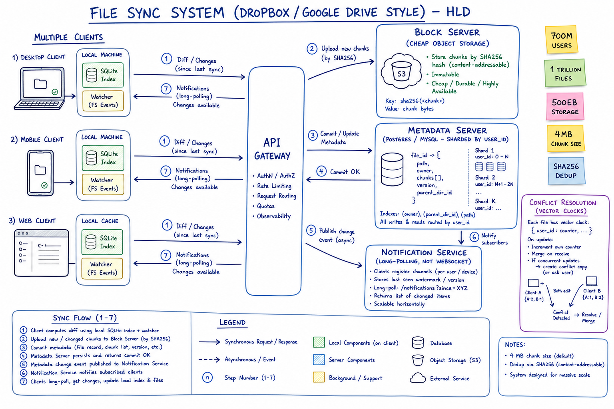
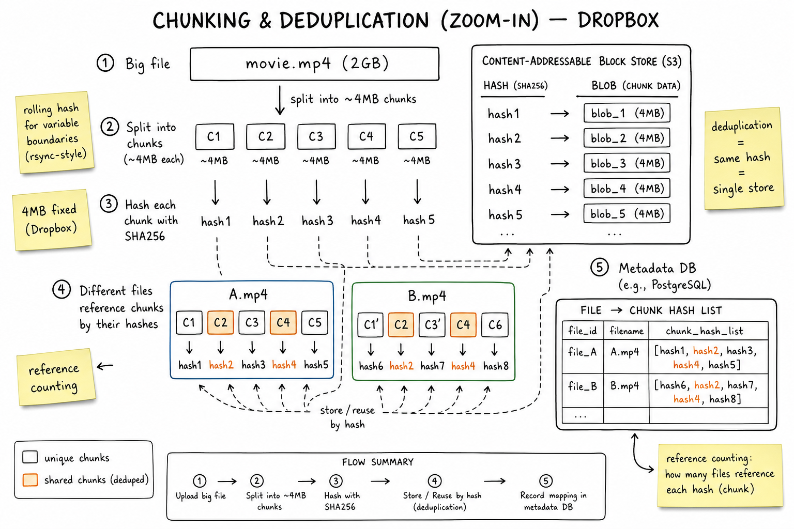
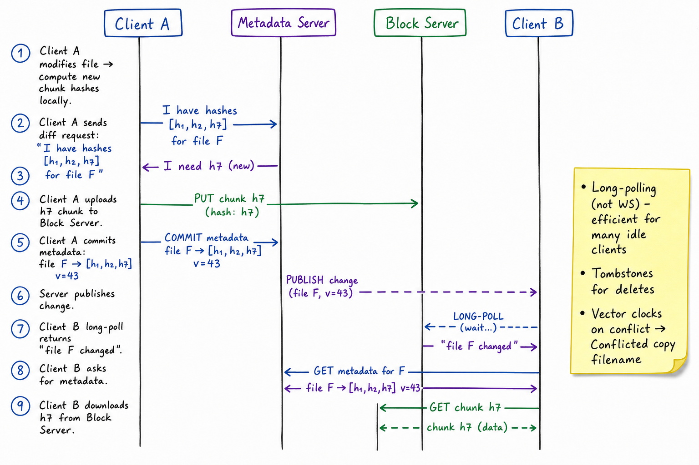

Dropbox / Google Drive // HLD
File sync across all devices: 4 MB chunking with SHA256 content-addressable storage for dedup, separate metadata + block servers, long-polling (not WebSockets) for change notifications, vector-clock conflict resolution, shared folders via ACL. 700M users, 1T files, 500EB storage.

Whiteboard HLD: clients (desktop/mobile/web) hold a local SQLite index + watcher. Block Server (cheap S3-style object store) holds content-addressable 4 MB chunks keyed by SHA256. Metadata Server (Postgres/MySQL sharded by user_id) holds file_id → {path, owner, chunks[], version, parent_dir_id}. Notification Service uses long-polling (not WebSocket) to inform clients of changes; this is famously what Dropbox optimized for at scale. Vector clocks reconcile concurrent edits.
01 — Requirements
Functional
- Upload / download files of arbitrary size
- Sync across multiple devices per user (desktop, mobile, web)
- Shared folders with multiple collaborators
- File history / version restore
- Offline mode — queue uploads while disconnected
- Conflict resolution when two devices edit the same file
- Selective sync: pick which folders sync to each device
Non-Functional
- Massive storage: 500+ EB total; cheap object storage tiering matters
- Bandwidth-efficient: upload only the chunks that changed (delta sync)
- Eventually consistent across devices; converges within seconds
- High availability: 99.9%+; metadata reads must be fast
- Durable: 11 9s like S3; no file ever lost
- Scalable notification fan-out: <1s after change before other devices know
01a — Core Entities
| Entity | Key Fields | Notes |
|---|---|---|
| User | user_id, email, quota_bytes, used_bytes | Sharding key for almost everything. |
| File | file_id, owner_id, path, parent_dir_id, size, version, mime_type, deleted | Metadata only — content is the chunk list. |
| Directory | dir_id, owner_id, path, parent_dir_id | Tree structure; path is denormalized for fast lookups. |
| Chunk | sha256 → blob (4 MB) | Content-addressable in Block Server / S3; immutable; deduped globally. |
| FileVersion | (file_id, version) → chunk_hashes[], created_at, author | Each version is just a new chunk list; old versions retained for history. |
| Share | (resource_id, principal_id) → role (owner/editor/viewer) | ACL on directory or file. |
| Device | device_id, user_id, name, last_seen_cursor | Cursor = position in change log; resumes from here. |
| Change Event | (user_id, cursor) → {file_id, op, version, ts} | Append-only feed per user; clients tail it. |
| Conflict Marker | file_id, parent_versions, resolved_via | "Conflicted copy" filename when reconcile fails. |
01b — API Design
Block server (chunks)
PUT /blocks/{sha256} body: 4MB chunk
-> 201 if new, 200 if already present (dedup)
GET /blocks/{sha256} -> 4MB chunk
POST /blocks/has body: { hashes: [h1, h2, ...] }
-> { missing: [h1, ...] } # batch existence check before upload
Metadata server
POST /files { path, chunk_hashes, parent_version }
-> { file_id, version } | 409 conflict (parent_version stale)
GET /files/{id} -> metadata + chunk_hashes
GET /files/by-path?path=/foo/bar
PATCH /files/{id} { path, parent_dir_id } # move/rename
DELETE /files/{id} (soft delete, tombstone)
GET /changes?since={cursor} -> { changes: [...], next_cursor } # long-poll
Sharing
POST /shares { resource_id, principal, role }
DELETE /shares/{id}
GET /shares?principal=me -> resources shared with me
The non-obvious contract: upload chunks first, commit metadata last. /files takes hashes, not bytes — if any chunk is missing, the metadata commit fails and the client uploads only the missing blocks.
02 — Estimation
Users: 700M registered, 200M MAU, 50M concurrent
Files: 1 trillion total; avg 5000/user
Avg file size: ~500 KB (skewed; many small + few huge)
Storage: 500 EB total (lots is cold)
Daily writes: 50M users x 50 changed files/day = 2.5 B file ops/day
Peak: ~50K ops/sec
Daily uploads: ~200 PB/day raw, ~50 PB/day after dedup (4x dedup ratio)
Notification fan-out: 200M open long-poll connections (1 per device, ~1.5x users)
Each one re-establishes every 60s -> ~3.5M conn/sec churn03 — Why It's Hard
- Bandwidth efficiency: if a user edits 1 byte of a 1 GB file, upload only the 4 MB chunk that changed — not the whole file
- Storage cost: 500 EB × pennies = billions; dedup is what makes the business work
- Many idle clients: 200M open connections, most doing nothing — can't use a thread per connection
- Concurrent edits: two devices offline, both edit, both reconnect — need a deterministic merge or conflict marker
- Metadata is the bottleneck: the blocks are easy (S3 will take it); the metadata DB is where Dropbox hurts
- Shared folders: a single file change must notify N collaborators, each on multiple devices
- Tree operations: renaming a folder with 1M files inside is a metadata transaction nightmare
04 — Architecture
Client (Desktop / Mobile / Web)
|
| local SQLite index, watcher, diff engine
v
API Gateway (per region)
|
+----------------+-----------------+--------------------+
v v v v
+----------+ +------------+ +----------------+ +----------------+
| Block | | Metadata | | Notification | | Share / ACL |
| Server | | Server | | Service | | Service |
| (S3-ish) | | (Postgres | | (long-poll) | | (Postgres) |
| | | sharded) | +----------------+ +----------------+
| sha256-> | | files/dirs | ^
| blob | | + history | |
+----------+ +------------+ | publishes
| |
v |
Kafka (file.changed) -+--> Search index, Audit, Analytics
05 — Chunking & Deduplication

Zoom: file is split into 4 MB chunks, each hashed with SHA256. Block store is keyed by hash, so any two files sharing a chunk store it once. Metadata DB only references hashes → rename / move / dedup never touches block layer.
Fixed-size vs content-defined chunking
Fixed 4 MB (Dropbox): simple, fast hash, fixed offsets
but: insert 1 byte at start -> every chunk shifts -> no dedup
Content-defined (rsync, rolling Rabin hash picks boundaries based on content
borgbackup, restic): insert in middle -> only nearby chunks change
but: more CPU on the client
Dedup payoffs
- Same large file shared by 1000 users? Stored once.
- Linux ISO uploaded by anyone in the world? Already on the block server —
POST /blocks/hasreturns empty missing list, no bytes transferred. - Dropbox's reported dedup ratio historically ~4× (storage) and even higher on bandwidth.
Convergent encryption: hash the plaintext, derive an encryption key from the hash; lets you dedup encrypted content but leaks "two users have the same file" as a metadata side-channel.
06 — Sync Protocol

Zoom: Client A modifies file → diffs against local SQLite → sends hash list to server → server says which are new → client uploads only those → metadata commit. Client B is long-polling and learns about the change.
POST /blocks/has with hash list → server returns "I'm missing [h7]". Avoids reuploading existing blocks.PUT /blocks/{sha256} for each missing chunk. Parallelized; resumable.POST /files with new chunk list and parent_version. Server CAS-updates file row; if version mismatched, returns 409 and client must reconcile.file.changed event to Kafka. Notification Service consumes and pushes to all long-poll connections for affected users./changes?since=cursor long-poll returns with the new change. Client B fetches metadata and downloads only the missing chunks.07 — Metadata Store
Schema (simplified)
files (file_id PK, owner_id, parent_dir_id, name, version,
size, mime_type, deleted_at, created_at, updated_at)
file_chunks (file_id, version, idx, sha256 PK on (file_id, version, idx))
dirs (dir_id PK, owner_id, parent_dir_id, name, deleted_at)
shares (resource_id, principal_id, role, granted_at)
changes (user_id, cursor PK, op, file_id, version, ts) # append-only feed
Sharding
- By
user_id: each user's tree lives entirely on one shard → transactional path ops are cheap - Cross-shard cases: shared folders span owners on different shards — handled via the share table + read-side join
- Block store is not sharded by user; chunks are global (content-addressable)
Folder rename problem
- Rename
/work→/projectswith 1M files inside — do you update 1M rows? - Dropbox stores paths as parent_dir_id + name; rename = update one row. Path is reconstructed on read.
- Caveat: a path-prefix change-feed is harder; subscribers reconstruct paths from the dir tree.
08 — Conflict Resolution
The race
Device A offline, edits doc.txt from v3 → v4'. Device B offline, edits same file from v3 → v4''. Both reconnect.
Mechanism
- Every file has a monotonic
versionon the server side - Commit includes
parent_version; server does CAS on(file_id, version=parent_version) → version+1 - First commit wins; second commit gets 409 with current server state
- Loser: try a three-way merge if text-mergeable; otherwise create "doc (Bob's conflicted copy 2026-05-20).txt" with the loser's content
Vector clocks (in some designs)
doc.txt version vector: {device_A: 2, device_B: 1}
device A commits with VV {A:3, B:1}, device B commits with {A:2, B:2}
Neither dominates the other -> concurrent edits -> conflict copy
Real Dropbox uses a simpler "last writer wins + conflicted copy on loss" model. CRDT-style auto-merge belongs to Google Docs (text), not a generic file sync.
09 — Notifications (Long-Polling)
Why long-polling, not WebSockets?
- 200M+ idle connections, almost all silent most of the time
- WebSocket per device = persistent state on the server, costly to scale
- Long-poll = simple HTTP with 60s timeout; cheap to load-balance across stateless servers; tolerates flaky middleboxes / corporate proxies that block WS
- Dropbox famously runs >1M long-poll connections per host
The wait queue
GET /changes?since=cursor_xyz
server: block until any change with user_id matches, or 60s timeout
on event: return changes + new cursor; client immediately re-polls
on timeout: return empty + same cursor
How does the server "block"?
- Notification server holds the request open, registers a callback on Kafka consumer for that user
- When
file.changedfor user lands, callback fires → response written - Async I/O (Twisted historically at Dropbox, now Go/Rust elsewhere) — one thread serves thousands of long-polls
11 — Scaling
- Block store on S3 / Magic Pocket — Dropbox famously migrated off S3 to its own exabyte-scale erasure-coded object store. Object storage primer.
- Metadata sharded by
user_idwith 1000s of Postgres/MySQL shards; cross-shard ops via the share table only. - Notification service horizontally scaled: stateless long-poll hosts, Kafka consumer routing by user_id hash.
- CDN for downloads: signed URLs on chunks; popular shared files cached at edge.
- Caching path lookups: parent_dir_id chains in Redis for fast path resolution.
- Per-user quota tracked in metadata DB; recompute via materialized view nightly to catch drift.
12 — Edge Cases
- Two devices offline, both edit → reconnect → first wins, second creates "Conflicted copy"
- Massive folder rename (1M files) → path is denormalized: only the dir row updates; clients reconstruct paths client-side
- Client clock skew → never trust client timestamps for ordering; server cursors are monotonic
- Quota exceeded mid-upload →
POST /filesfails with 413; client surfaces UI; chunks already uploaded are gc'd - Corrupted upload →
sha256 != PUT body hash→ reject; chunk never recorded - Long-poll connection killed → client reconnects with same cursor; no events lost
- Deleting shared folder → soft-delete only the share; other collaborators still see it
- Suspicious uploader (CSAM / malware) → PhotoDNA / antivirus scan on chunks; offending hashes blocked globally
- Block server outage → metadata reads still work (path browsing); downloads fail; uploads queued client-side
13 — Real-World Equivalents
| Company | Notes |
|---|---|
| Dropbox | 4 MB fixed chunking; SHA256; Magic Pocket (own erasure-coded object store); long-polling at >1M conn/host. |
| Google Drive | Content-addressable storage on Colossus; tight integration with Docs; gRPC sync rather than long-poll. |
| iCloud | Per-app silos (Photos, Files, Keychain); CKKS / CloudKit for app integration; backed by S3+Apple data centers. |
| OneDrive | Sharing-first model around AAD; tight integration with SharePoint; Microsoft Graph as the API. |
| Box | Enterprise-focused; very rich ACL + workflow; built atop S3. |
| Rsync / Restic / Borg | Open-source content-defined chunking + dedup; the algorithmic core of what Dropbox productized. |
14 — Interview Q&A
Why not just upload the whole file every time?
Why long-polling instead of WebSockets?
How is the block server different from the metadata server?
How does the client detect changes?
blocks/has existence check.How are conflicts resolved?
parent_version; server CAS-updates if it matches. Loser gets 409 and either does a 3-way merge (if text) or saves their content as "doc (Bob's conflicted copy).txt" so no data is silently lost.How does the metadata DB scale?
user_id. Every user's tree lives entirely on one shard, so path operations are single-shard transactions. Shared folders are the cross-shard case — handled via the share table + read-side join. Postgres or MySQL with thousands of shards.What about a 1M-file folder rename?
parent_dir_id; rename touches one row (the directory). Paths are reconstructed by walking parent chains on read. Otherwise a rename is a million-row write transaction — impossible.How does sharing work?
share entry maps (resource_id, principal_id) -> role. On metadata read, walk up the parent chain looking for a matching share. Sharing makes the per-user tree a graph; ACL evaluation lives at the metadata layer; the block store doesn't know about sharing.Why content-defined vs fixed-size chunking?
How do you protect deleted files (trash / undelete)?
deleted_at on the file row + retain the chunk list. Trash = view of deleted_at IS NOT NULL. Chunks are never deleted until reference count drops to zero (and even then, lazily by a GC job). 30-day retention is typical.